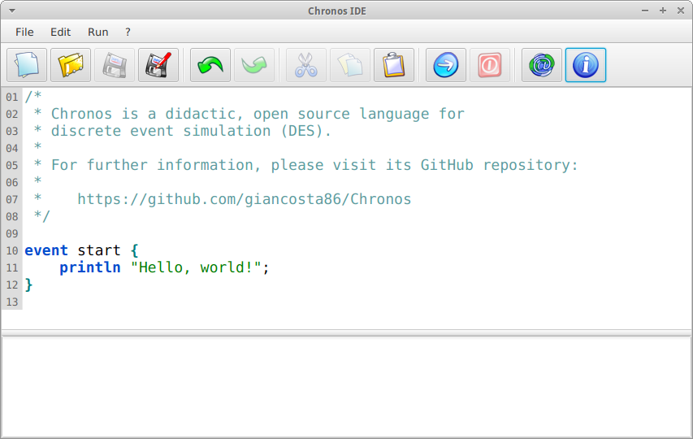

Introduction
Chronos IDE lets you write and run scripts for the Chronos programming language in a visual, user-friendly environment.
Requirements
Chronos IDE requires Java 8 update 51 or later compatible version.
Running the app
The suggested way to start Chronos IDE is MoonDeploy: if you have MoonDeploy installed, just click the Run with MoonDeploy button, then open the application descriptor with MoonDeploy.
Alternatively, you might want to download the binary zip file and execute one of the scripts in its bin directory.